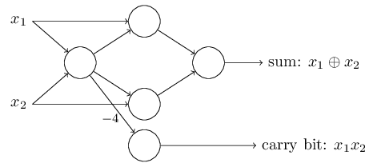

- Perceptron:
- It was developed by Frank Rosenblatt.
- It takes several binary inputs, x1,x2,..., and produces a single binary output.
- Mathematically for a perceptron:
output = 0 if Σ j wjxj <= Threshold 1 if Σ j wjxj > Threshold where
w represents the weightage for the input factor and can be any real number. The larger value of w indicates that the factor matters a lot.
x represents the input factor and is represented either as 0 or 1.
j represents the number of input factors.
Threshold is the real number and is chosen appropriately as per requirement.
- The final output/decision making depends on the value of weights and threshold chosen.
- Multiple layers of perceptrons can be used to mimick human decision making as shown below:

- The first layer of perceptrons is making three very simple decisions, by weighing the input evidences.
- The second layer of perceptrons is making a decision by weighing up the results from the first layer.
- To simplify the above equation, a perceptron can also be written as:
output = 0 if w * x + b <= 0 1 if w * x + b > 0 where
w * x represents the dot product of w and x.
b = -Threshold is called bias which is a measure of how easy it is to get the perceptron to output a 1.
- For a perceptron with two inputs A and B, each with weight -2 and an overall bias of 3 the output can be calculated as:
(0 * -2) + (0 * -2) + 3 = 3 > 0 so output is 1
(0 * -2) + (1 * -2) + 3 = 1 > 0 so output is 1
(1 * -2) + (0 * -2) + 3 = 1 > 0 so output is 1
(1 * -2) + (1 * -2) + 3 = -1 < 0 so output is 0
The truth table for above perceptron with various inputs is
Input A Input B Output 0 0 1 0 1 1 1 0 1 1 1 0 - The above truth table confirms that the perceptrons are equivalent to NAND gate. Since NAND is a universal gate, so we can infer that the perceptrons can be used to implement any boolean function.
- The sum bit on adding A and B is denoted as A ⨁ B
- The carry bit on adding A and B is denoted as AB
- If in a network of perceptrons the output from one perceptron is used twice as input to some other perceptron, in that case the double line can simply be merged into a single line with a weight of 2 * w (weight) instead of two line with each having w (weight).


- A input variables like x1 and x2 can also be notated as a special perceptron with no inputs but the output here would actually be the desired values x1. The above formula
does not apply to this perceptron.output = 0 if Σ j wjxj <= Threshold 1 if Σ j wjxj > Threshold
- Sigmoid:
- Using the network of perceptrons like above, we can devise learning algorithms which can automatically tune the weights and biases. For example, the inputs to the network might be the raw pixel data from a scanned, handwritten image of a digit. And we'd like the network to learn weights and biases so that the output from the network correctly classifies the digit.
- During learning:
- The network will adjust the weights and biases so that the output of the network correctly identifies the digit.
- A small change in the weight during learning should cause only a small corresponding change in the output from the network.
- The above problem is solved using an artificial sigmoid neuron.
- It takes several inputs, x1,x2,..., which can be any value between 0 and 1 (both inclusive) and produces .